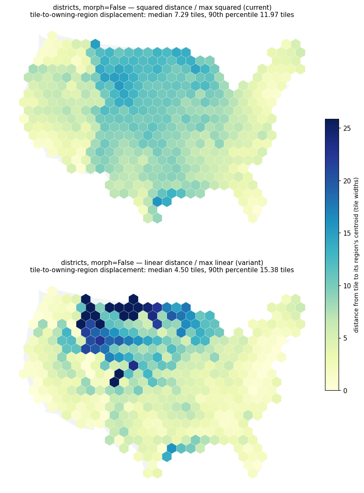
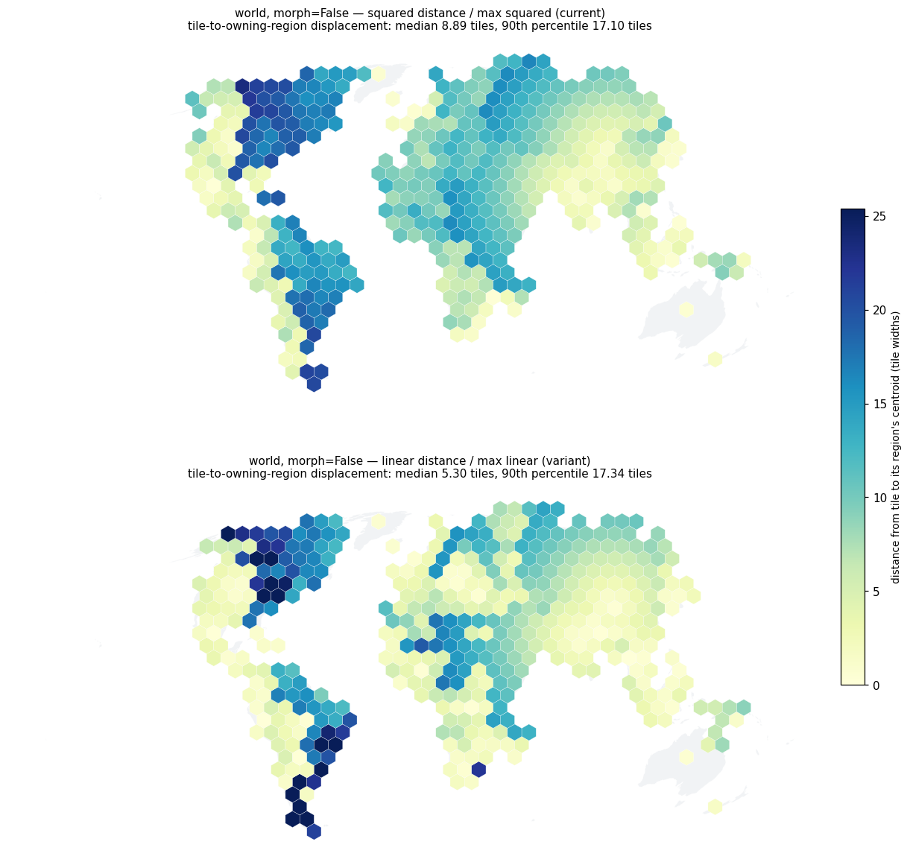
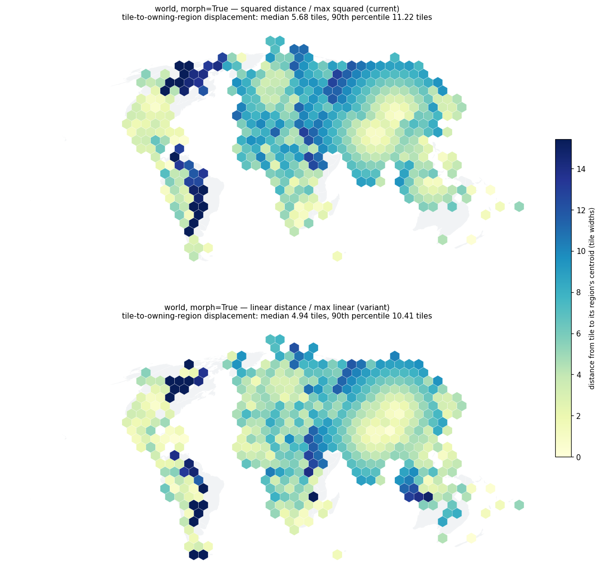
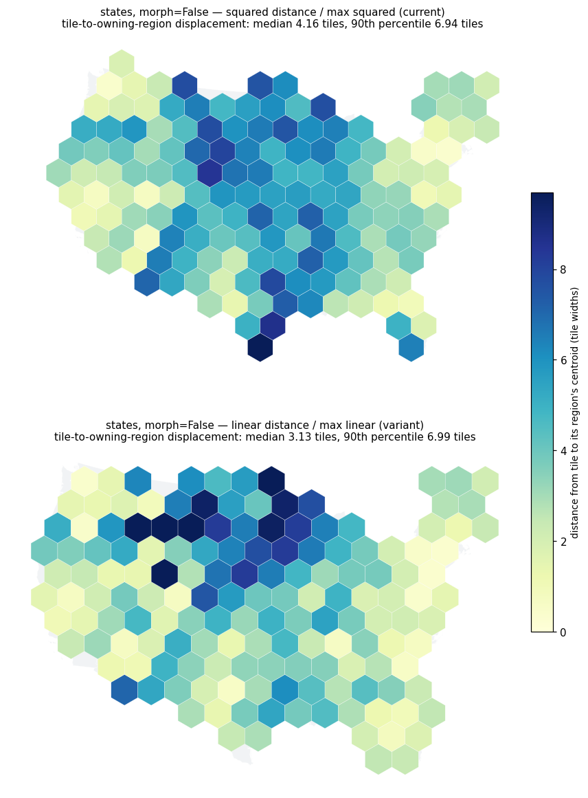
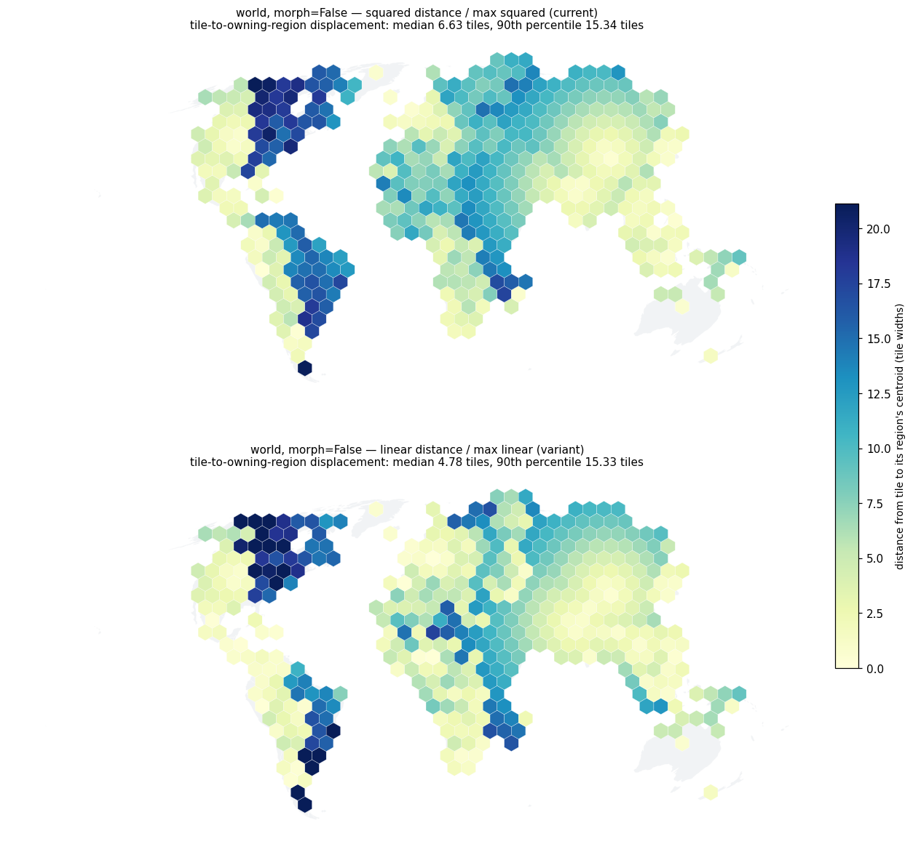
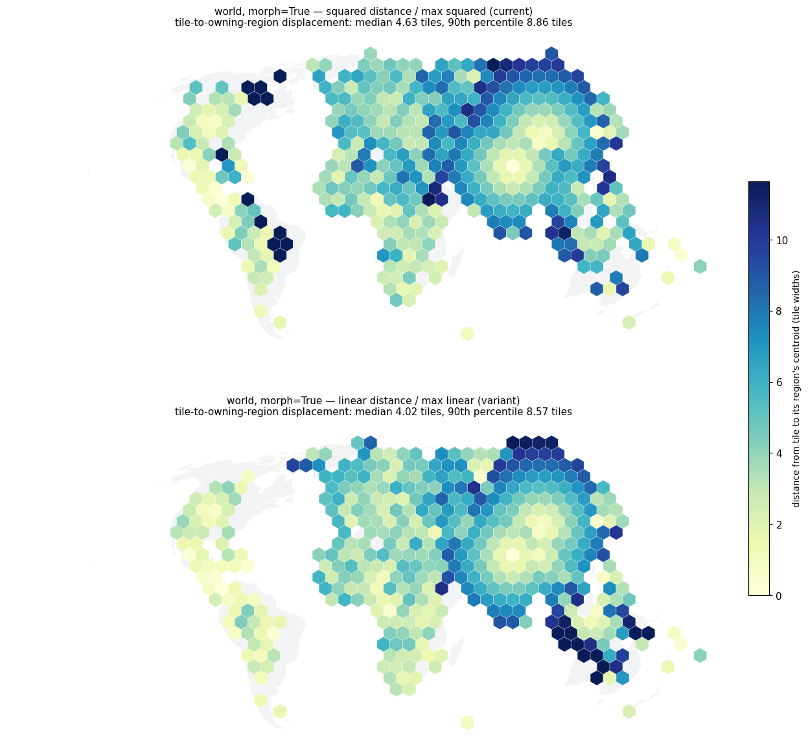

US states at 154 tiles, morph=False.
Evaluation only, no implementation. Re-measured on repaired world geometry, the variant wins on the metric it targets but now FAILS the mandatory integrity screen on world at both morph settings, and its costs are mediated by interior_bonus — so it is not a one-line change.
**Measured against origin/main @ 7ea877e**, which includes the repaired world.parquet (#45), the disjoint component pools (#46), min_one_tile_per_region (#47) and the honest defaults (#48).
An earlier pass of this evaluation ran at 2bae205, **on a different world dataset**. None of its world numbers are comparable and none are carried forward; that results file is kept alongside as results-2bae205-old-world-dataset.jsonl and its figures are prefixed old-2bae205-, clearly labelled, for comparison only. The earlier pass recommended taking the change. **On repaired geometry that recommendation no longer holds**, for one specific reason given below.
**Nothing was implemented.** The variant is applied by monkeypatching _build_cost_matrix with a verbatim copy carrying one changed expression, so both variants run against the same checkout in the same process. No default was changed and no PR opened.
HungarianOptions' docstring says "All cost terms are normalized to [0, 1] so the parameters are comparable across datasets", and that intent is sound. The distance term **is** in [0, 1]. The issue is narrower: it is squared and divided by the maximum *squared* distance, while outside_frac and connectivity are linear fractions. Same range, quadratically different distribution.
``python dist_matrix = dx**2 + dy**2 max_dist = dist_matrix.max() or 1.0 dist_norm = dist_matrix / max_dist ``
A tile at fraction *f* of the maximum distance costs *f²*, not *f*: at half the map's extent 0.25 instead of 0.5, at a quarter 0.06 instead of 0.25. The variant replaces those three lines with sqrt(dx**2 + dy**2) over the maximum linear distance. Range stays [0, 1].
| verdict on 7ea877e | |
|---|---|
| Integrity screen at the shipped defaults | **FAILS on world** — non-contiguous regions 1 → 4 at morph=True, 3 → 7 at morph=False |
| Stability of that failure | **stable**: 4 repeats at morph=True and 2 at morph=False, every one identical |
| The metric it targets | improves on **all seven inputs at morph=False and five of seven at morph=True** |
| Adjacency preservation | mixed: **+11 points on world at morph=True**, **−13 points on districts at morph=False** |
distance_weight = 1.0 still right under linear? | **No.** It is the worst weight for contiguity on world |
| Is it a one-line change? | **No.** Both costs are mediated by interior_bonus |
The earlier pass saw one extra region with no tile under the variant (15 vs 14) and attributed it to the empty-component-pool defect rather than the normalisation. #46 and #47 have landed, so that is now testable:
| world | current | variant |
|---|---|---|
regions with no tile, min_one_tile_per_region **off** (default) | 13 | **13** |
regions with no tile, min_one_tile_per_region **on** | 0 | **0** |
| total tile shortfall, option off | 13 | 13 |
Identical in every cell, at both morph settings. **The attribution was correct**: the normalisation never cost a region its tile, and the asymmetry was the empty-pool defect moving under a changed assignment.
**But a larger integrity regression has appeared on repaired geometry**, and this one is caused by the normalisation:
| input | morph | non-contiguous regions, current → variant |
|---|---|---|
| world | True | 1 → **4** |
| world | False | 3 → **7** |
| world mainland only | True | 1 → **0** |
| world mainland only | False | 2 → 2 |
| africa, states (×3), districts | both | 0 → 0 everywhere |
Split groups are zero everywhere, before and after. Confirmed stable by repetition: four repeats at morph=True and two at morph=False produced byte-identical non-contiguity counts and displacement medians (stability.json).
By the rule established throughout this effort — any variant that introduces a split group or a non-contiguous region is disqualified regardless of fidelity — **the variant loses on world at the shipped defaults.** That is the reverse of the earlier pass, where world morph=True improved 1 → 0, and it is a consequence of the repaired geometry, not of anything I changed.
Note the shape of it: **world mainland only is fine, and world is not.** The regressions are concentrated on the multi-landmass input, where a region's block is easiest to break apart.
0.485 → 0.354 at morph=False, identical to the earlier pass to three decimals, as are the whole districts and states blocks. Nothing merged touched those inputs, which is the expected result and a useful check that the harness is measuring the same thing it did before.
World at morph=False, median tile-to-owning-region displacement:
| configuration | km | tile widths |
|---|---|---|
current normalisation, distance_weight 1.0 (shipped) | 3457 | 8.89 |
current normalisation, distance_weight 4.0 | 2788 | 7.17 |
**variant, distance_weight 1.0** | **2063** | **5.30** |
**Linear at the default weight still beats squared at four times the weight**, by a wider margin than before. The squared form cannot reach the variant's distance fidelity by re-weighting, because the problem is the shape of the distribution rather than its scale. "Just raise distance_weight" remains unavailable as an alternative.
*(Correcting the earlier write-up: I previously quoted "3.85 and 5.96 tiles" alongside those kilometre figures. Those were displacement.median_tiles — region-centroid displacement from the metrics module — paired with kilometres from the tile-to-owner statistic, so one sentence mixed two different metrics. The kilometres were right. The tile-width figures for the tile-to-owner metric on that older dataset were 4.78 and 5.77.)*
distance_weight = 1.0 is no longer the right point under linearSwept 0.25, 0.5, 1.0, 2.0, 4.0 under both normalisations on states, districts and world, at both morph settings. World, non-contiguous regions:
distance_weight | 0.25 | 0.5 | 1.0 | 2.0 | 4.0 |
|---|---|---|---|---|---|
| current, morph=True | 1 | 0 | 1 | 1 | 1 |
| variant, morph=True | 2 | 4 | **4** | 3 | **1** |
| current, morph=False | 3 | 6 | 3 | 1 | 3 |
| variant, morph=False | 4 | 5 | **7** | 3 | 5 |
The default 1.0 is the **worst** weight for the variant on world at both settings. At weight 4.0 and morph=True the variant reaches parity on contiguity (1 vs 1) while being better on everything else — 1676 km against 2138, adjacency 0.537 against 0.444, direction 27.5° against 29.8°. At morph=False no weight reaches parity.
This reverses the earlier pass's finding that 1.0 remained the right default. It also means the risk flagged earlier — that low weights introduce non-contiguity — is the lesser half of the story: the whole mid-range is bad, and only the high end recovers.
interior_bonusThe variant raises the distance term at mid-range, which competes directly against interior_bonus — the term that keeps a region's tiles in one block. So the natural question is whether raising that bonus restores what the variant costs. Swept 2.0, 3.0, 4.0, 6.0 at distance_weight 1.0.
**World, non-contiguous regions:**
interior_bonus | 2.0 | 3.0 | 4.0 | 6.0 |
|---|---|---|---|---|
| current, morph=True | 1 | 2 | 2 | 2 |
| variant, morph=True | 4 | 3 | **2** | 2 |
| current, morph=False | 3 | 2 | 2 | 2 |
| variant, morph=False | 7 | 5 | **4** | 6 |
At interior_bonus 4.0 the variant reaches **parity on world at morph=True** (2 vs 2) while keeping its fidelity advantage — 2059 km against 2257, adjacency 0.476 against 0.387, direction 28.1° against 33.4°. At morph=False it closes most of the gap but does not reach parity (4 vs 2).
**Districts, morph=False** — where the adjacency cost lives:
| adjacency | IoU | owner displacement | |
|---|---|---|---|
current, interior_bonus 2.0 (shipped) | 0.485 | 0.857 | 638 km |
variant, interior_bonus 2.0 | 0.354 | 0.838 | 394 km |
variant, interior_bonus 4.0 | **0.433** | **0.870** | 447 km |
current, interior_bonus 4.0 | 0.464 | 0.880 | 650 km |
**Most of the districts adjacency loss is recoverable** by raising interior_bonus, at a small cost in displacement that still leaves the variant far ahead of the current form (447 km against 638). So the 13-point drop is not intrinsic to linear normalisation; it is the two terms being out of balance at the shipped bonus.
The honest conclusion: **this is a two-parameter proposal, not a one-liner.** Changing the normalisation alone is disqualified by the integrity screen on world. Changing it together with interior_bonus ≈ 4.0 buys parity at morph=True and a clear fidelity win, and still leaves a residual regression at morph=False. Also worth noting: interior_bonus was raised to 2.0 recently and deliberately, so moving it again is not a free rider on this change — it is a second decision of the same size.
Current → variant, distance_weight 1.0, interior_bonus 2.0.
| input | morph | owner displacement (km) | displacement (tiles) | adjacency | direction (deg) | IoU vs original |
|---|---|---|---|---|---|---|
| states_uniform | True | 435 → **351** | 1.53 → **1.23** | 0.725 → 0.688 | 28.3 → 29.1 | 0.713 → 0.713 |
| states_uniform | False | 641 → **535** | 2.24 → **1.87** | 0.523 → 0.505 | 34.2 → 39.4 | 0.819 → 0.819 |
| states_uniform_sq | True | 326 → 341 | 0.74 → 0.78 | 0.459 → **0.495** | 24.8 → **20.6** | 0.666 → **0.684** |
| states_uniform_sq | False | 723 → **511** | 1.58 → **1.12** | 0.468 → 0.385 | 30.2 → 36.7 | 0.801 → 0.793 |
| states | True | 393 → 414 | 2.10 → 2.34 | 0.798 → 0.761 | 17.1 → **15.1** | 0.687 → 0.682 |
| states | False | 630 → **474** | 3.93 → **2.52** | 0.697 → 0.615 | 25.4 → **20.2** | 0.812 → 0.792 |
| districts | True | 399 → **380** | 4.52 → **4.30** | 0.527 → 0.498 | 25.9 → 27.6 | 0.687 → 0.679 |
| districts | False | 638 → **394** | 7.29 → **4.50** | **0.485 → 0.354** | 33.9 → 41.5 | 0.857 → 0.838 |
| africa | True | 616 → **591** | 1.72 → **1.30** | 0.700 → **0.709** | 14.8 → **12.7** | 0.839 → 0.832 |
| africa | False | 634 → **606** | 1.81 → **1.36** | 0.691 → 0.645 | 15.6 → **12.8** | 0.855 → **0.864** |
| world_mainland | True | 1723 → **1617** | 3.76 → **3.56** | 0.603 → **0.609** | 28.7 → **21.5** | 0.364 → 0.361 |
| world_mainland | False | 2865 → **1956** | 8.92 → **4.27** | 0.442 → **0.462** | 31.5 → **30.4** | 0.616 → 0.604 |
| world | True | 2287 → **1987** | 5.42 → **4.37** | 0.400 → **0.511** | 35.7 → **29.5** | 0.436 → 0.430 |
| world | False | 3457 → **2063** | 9.94 → **4.17** | 0.443 → 0.382 | 33.8 → **32.6** | 0.517 → **0.547** |
**Lead with morph=True, as established.** The large morph=False gains are the variant distributing an unavoidable population/area overflow more sensibly, not fixing a cost-function defect — see the next section. At morph=True, where morphing has already removed the mismatch, world improves by 13% on the targeted metric, gains **11 points of adjacency** (0.400 → 0.511) and 6° of direction — and costs three non-contiguous regions.
The specific cases named in the world diagnosis, re-measured on 7ea877e:
| region | morph | current: nearest tile belongs to | variant: nearest tile belongs to | its own tile, current → variant |
|---|---|---|---|---|
| Jamaica | True | Venezuela | **Jamaica** | 764 km → **310 km** |
| Jamaica | False | **Mali** | Dominican Rep. | no tile placed |
| Puerto Rico | False | **Niger** | Haiti | no tile placed |
| Trinidad and Tobago | False | **Algeria** | Gambia | no tile placed |
| Cyprus | False | **India** | Iran | no tile placed |
| Cyprus | True | Pakistan | Pakistan | 1782 km → 1991 km |
| Bahamas | True | Jamaica | Cuba | 1087 km → 1087 km |
| Denmark | False | United Kingdom | Austria | 9109 km → 8441 km |
| Iceland | True | Czechia | Sweden | 2102 km → 2206 km |
**A correction to a correction, which needs to be on the record.** I previously reported that my Senegal / Mali / India examples were measured on an older commit and did not hold on current main. That statement was itself based on the 2bae205 run — an intermediate commit with the *old* world dataset and without #46. **On the repaired dataset at 7ea877e they do reproduce**: at morph=False the tile nearest Jamaica belongs to Mali, the tile nearest Puerto Rico to Niger, the tile nearest Trinidad to Algeria, and the tile nearest Cyprus to India. The variant improves all four of those, though not always to a sensible owner. The lesson is that these individual examples are sensitive to both commit and dataset and should never be quoted without the commit they were measured on.
**The second correction stands unchanged, and matters more.** The extreme placements are not a cost-function problem. Denmark's tile sits in North America because at morph=False tile counts are proportional to population while geometry is proportional to land area; Europe demands far more tiles than Europe's area can host, so some countries *must* be placed elsewhere. No distance normalisation fixes that, and morph=True exists precisely to remove the mismatch. The variant moves Denmark's tile from 9109 km to 8441 km — it redistributes the overflow, it does not remove it.
**Do not take the change as it stands.** The integrity screen is disqualifying and it fails on world at both morph settings, stably. That screen has killed the best-fidelity candidate repeatedly in this effort, and this is another instance of the same pattern: the variant is clearly better on displacement, direction and — at morph=True — adjacency, and it breaks contiguity on the one input that most needs it.
Three options for the user, in the order I would put them:
1. **Park it.** The fidelity case is genuine and the diagnosis is correct — a quadratically distributed term against two linear ones does defeat the documented design intent. But the fix as measured costs contiguity on world, and the remedy for that is a second default change of the same magnitude as the first. Not a good trade to make quietly. 2. **Take it as an explicit pair with interior_bonus ≈ 4.0.** This reaches contiguity parity on world at morph=True with a clear fidelity win across the board, and recovers most of the districts adjacency loss (0.354 → 0.433). It leaves a residual regression on world at morph=False (4 non-contiguous against 2). This is a materially bigger proposal than the one-liner it started as, and interior_bonus was itself deliberately set to 2.0 recently. 3. **Reject.** Defensible on the integrity rule alone.
Whichever is chosen, two things are now settled and should be recorded regardless: the normalisation asymmetry is real and cannot be compensated by distance_weight; and the extreme world placements at morph=False are a population/area mismatch that no cost-function change addresses.
run.py (the variant, the distance_weight and interior_bonus sweeps, and the min_one_tile_per_region axis; results.jsonl written incrementally, one line per run), stability.py (stability.json), scramble_check.py (scramble_check.json), figures.py. Metrics come from visual_checks/grid-vs-mosaic-similarity/metrics.py, imported unchanged.
Superseded, kept for comparison and clearly labelled by commit: results-2bae205-old-world-dataset.jsonl, scramble_check-2bae205-old-world-dataset.json, old-2bae205-norm_*.png.

congressional districts, morph=False, where the adjacency cost concentrates.
US states at 154 tiles, morph=False.

world, morph=False, where the displacement effect is largest and least meaningful.

world, morph=True. Current normalisation above, variant below. Each tile is coloured by how far it sits from the centroid of the region owning it; dark tiles are symbols a long way from their land.

old-2bae205-norm_districts_morph0.png

old-2bae205-norm_states_morph0.png

old-2bae205-norm_world_morph0.png

the same world panel from the earlier pass, on the pre-repair dataset, kept only for comparison. Do not read numbers off it.